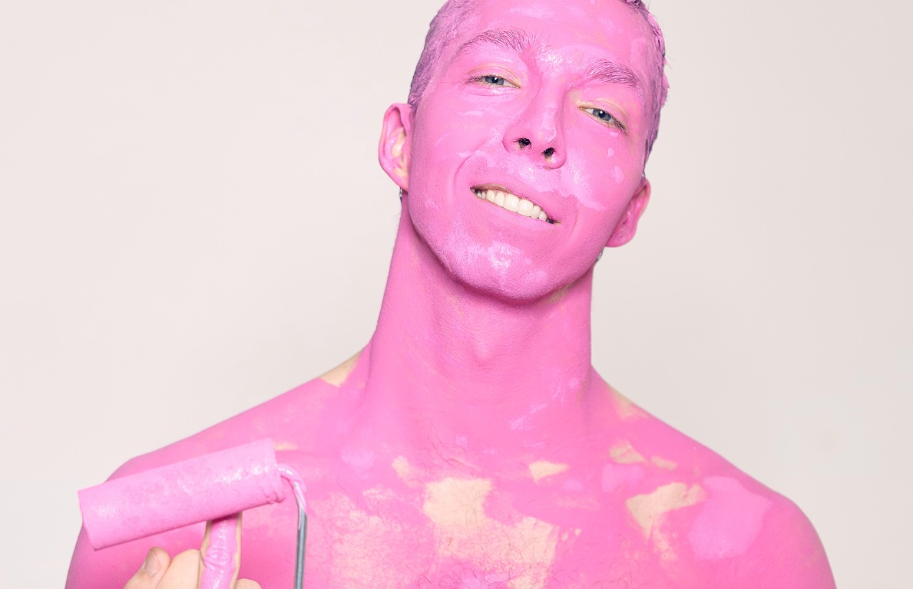

In the media
A journalist's perspective on what makes a story clear and worth sharing.
Senior marketing leadership, on your team
I bring senior-level marketing leadership to ambitious businesses—building the strategy, team, and momentum to help you grow, without the agency overhead.
Let's move your project forwardIndependent CMO · Personally invested in your growth


A little about me
My name is Zuzana Hošková. My entire professional life has been intertwined with art, design, architecture, and the social impact sector. I graduated in the History and Theory of Design and New Media at UMPRUM (Academy of Arts, Architecture and Design in Prague). I never became a curator or art historian, though—I was more interested in making these subjects accessible and finding ways to bring them to the public. For seven years, I worked in the media, writing about architecture, design, fashion, and the role of women in society.
I learned how to bring even complex topics into mainstream media, built a network of journalistic contacts, and gradually moved into public relations. In 2013, I became the spokesperson for the Czech Chamber of Architects, where I promoted the architectural profession, advocated for architectural competitions, and fought to save significant cultural heritage sites. I was also there at the birth of the Czech Architecture Award.
For the past 10 years, I have worked as an independent professional. I have led marketing and PR for Jatka78 theatre, dance company DEKKADANCERS, Fotograf Zone, and the Prague Pride festival. I have brought major theatre projects—such as My Country and The Story of the Astronomical Clock—as well as independent film projects into the media spotlight.
I love being there at the start of new projects, and stepping into ongoing ones to evaluate them and help them move forward. At work, I like a clear direction, strategy, and goal; in my free time, I happily leave all that behind. In winter, you’re most likely to find me travelling solo around Southeast Asia—often with no plan at all and a small backpack.
Experience that adds up
A track record shaped by journalism, PR, and work with people who care about what they put into the world.
A journalist's perspective on what makes a story clear and worth sharing.
Building experience across communication, campaigns, and brand strategy.
In 2025.
At the cultural events I promote.
Per year.
Short- and long-term collaborations.
My approach
Značky tvoří příběhy.
Pojďme napsat ten váš.
As an external CMO, I provide marketing leadership and strategy for small businesses, personal brands, cultural projects, and nonprofit organizations. I help set a clear direction, align your team, and choose marketing activities that make sense for your goals and budget. My work can also include PR strategy and media relations.
Smaller brands, culture, and nonprofits have their own specifics. I know them. I won't recommend unreasonably large campaign budgets or paid tools AI can easily replace. I can work with small budgets because I know the most important things are the right strategy, elegant processes, and relationships built over years. I've built brands with annual marketing budgets in the low tens of thousands of Czech crowns. I won't bury you in marketing jargon or processes; I'll choose what works for you.
Don't have the budget for a marketing hire, so everything falls on your shoulders? With the right direction and priorities, you can stop wasting your energy and money. Or perhaps you have a social media manager and an online specialist, but lack a broader strategy? I'll bring a holistic view of your brand to your team's work and uncover both weak spots and untapped potential.
Have you been active in the public sphere for a while but feel ready to take your brand further? Are you drowning in tasks and unsure where the problem lies? Instead of hiring another team member, we'll pause, assess your strengths and weaknesses, identify why some processes aren't working, and clarify roles and responsibilities within the team.
Launching a new project and not sure where to start with marketing? I'll develop a complete strategy—from the visual photoshoot, trailer, and videos to the right tone of voice for your copy and recommendations for social media content. I'll create an integrated schedule so every step connects and makes sense.
Is your marketing working, but your project needs more media visibility? I'll develop a comprehensive PR strategy, write your press release, prepare a bulletproof press kit, and distribute it to the right journalists. As a former journalist, I know how to shape even a niche topic, develop its story, and find the right people to pitch. I stay behind the scenes—you get seen.
Do you represent a commercial business looking for a meaningful connection with culture, the arts, or social-impact projects? Get in touch. I create tailored partnerships and barter collaborations that go beyond a logo on a poster—they have real impact, fit naturally into your communications, and bring value to both partners and their audiences.
Exceptionally professional, clear work precisely tailored to your target audience.

We'll meet to discuss our expectations and your project's priorities.
I'll propose a solution, next steps, an estimated time commitment, and send you a tailored quote.
Once you approve the proposal, we'll get to work. One-off consultations and new projects require a 50% advance payment. For ongoing collaborations, I invoice for the actual time worked at the end of each month.
Selected work
Two projects, each with its own story, audience, and communication challenge.

Premiéra · Dekkadancers
Příprava premiéry a komunikace představení souboru Dekkadancers.

Public relations · kultura
Public relations pro kulturní projekt Má vlast.
A good word goes a long way
A few words from the people I've worked alongside.
I worked with Zuzana as Vice-Chair and Chair of the Czech Chamber of Architects. Thanks to her dedication, expertise, and friendly communication, we succeeded in raising public awareness of the purpose and value of architecture. The number of architectural competitions grew by an incredible 400% over several years.
Marketing and PR in the nonprofit sector, particularly when focused on LGBTQ+ issues, is no easy task. One day you're dealing with threats on social media, the next with crisis communications in the press. Zuzana handled these situations with confidence and, given the nature of our work, with exceptional sensitivity.
Get in touch
Tell me what you're working on, what feels stuck, or what you're excited to try. We'll take it from there.